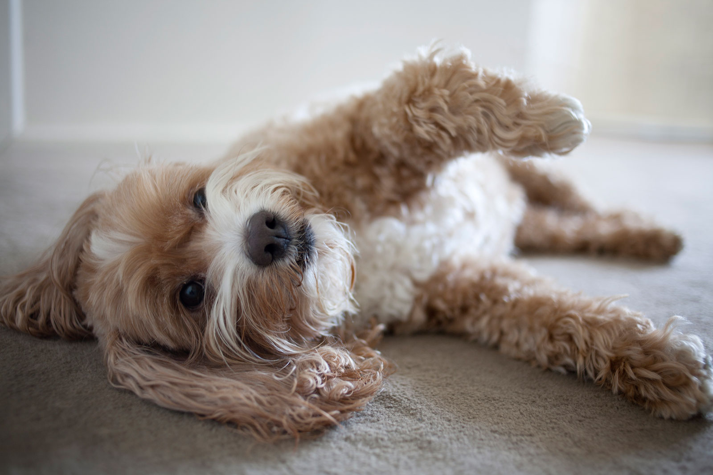
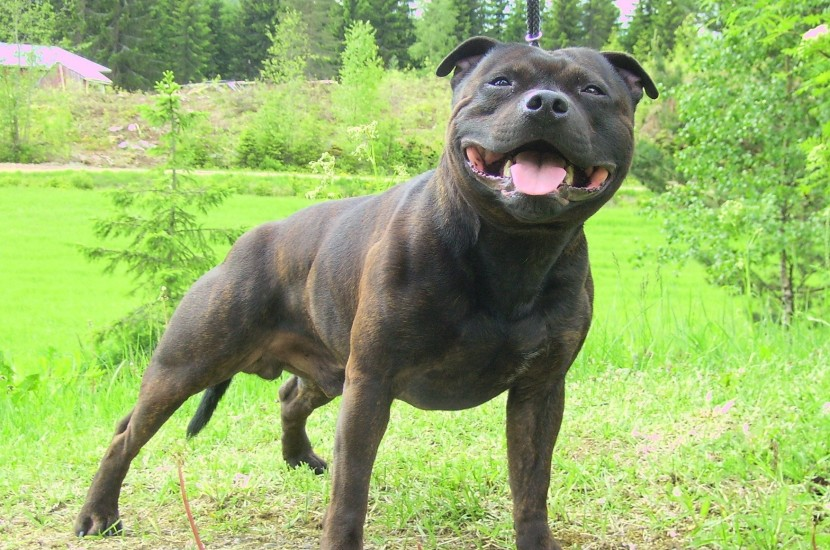

Hello, animal lover!
What you gonna find in this article about the best animal in the world dogs?
There is no one who doesn't like dogs. They are the best friends of men and women. If you are thinking about adopting one of them, or even if you just like dogs, you can find some curiosities here!
- The celebrities
- The beasts! AWR, AWR!
- The "oooooh so cuuuute"
- The giants
- The minis
Most famous!
Well, each person has a preference for breeds depending on their sizes, or maybe how cute they are, or even if they can defend their owners! I mean, their beloved friends! What are the top 5 popular dogs?
- Cocker Spaniel
- Springer Spaniel
- Labrador Retriever
- Cockapoo
- Staffordshire Bull Terrier
Loyal and playful: the words that define the Cocker Spaniel. It is the smallest of the spaniels. The perfect choice for someone looking for a big fella. Despite the hunting instinct, this breed is very loving and dedicated.

Like the Cocker, the Spring Spaniel is also very fun and affectionate. He is smart and obedient and is often used in a way to spend a lot of energy, like field hunting.
The Labrador Retriever is so simpatic, it is impossible to not love it. Also very loyal, it can be used to support people with special necessities. If there is something that you can't say aboutthe Labrador Retriever is that they are shy or agressive.

Cockapoos hate to be alone, you need to be always around. They will be asking for your attention all the time, following you wherever you go. If you are a home person, he is certainly the ideal mate.
If you look at Staffordshire Bull Terrier's face, you'll probably think: "this guy is angry!". That is not the truth though, they actually have a big heart. It is very lovely and will be always on your side.
Take care!
- English Mastiff
- Bulldog
- German Sheperd
- Rottweiler
- Pitbull Terrier
 Most Dangerous Dogs!
Most Dangerous Dogs!
So cute!
- Beagle
- Golden Retriever
- Shar Pei
- Pug
- Dachshund
What a monster!
- Irish Wolfhound
- Great Dane
- Saint Bernard
- Caucasian Shepherd
- English Mastiff
Little Little!
- Papillon
- Toy Poodle
- Pomeranian
- Yorkshire Terrier
- Chihuahua
REFERENCES:
- https://tinyterrier.com/popular-dog-breeds/
- https://thesmartcanine.com/most-dangerous-dogs/
- https://www.thedogdigest.com/cutest-puppy-breeds/
- https://www.legit.ng/1228102-what-biggest-dog-world-2019.html
- https://themysteriousworld.com/10-smallest-dog-breeds-in-the-world/
- https://www.petz.com.br/cachorro/racas/
- https://canaldopet.ig.com.br/guia-bichos/cachorros/springer-spaniel-ingles/57a23d465ac14f092055b2a1.html
- https://love.doghero.com.br/racas/staffordshire-bull-terrier/